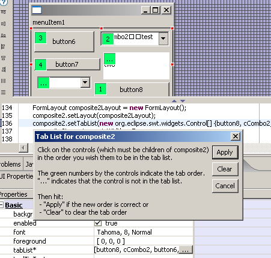
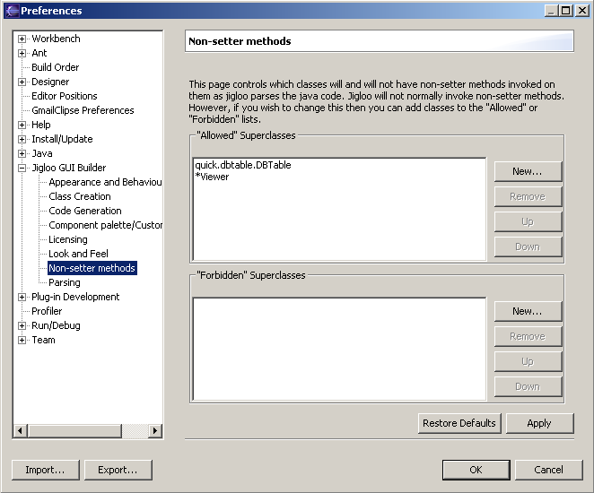
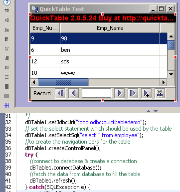
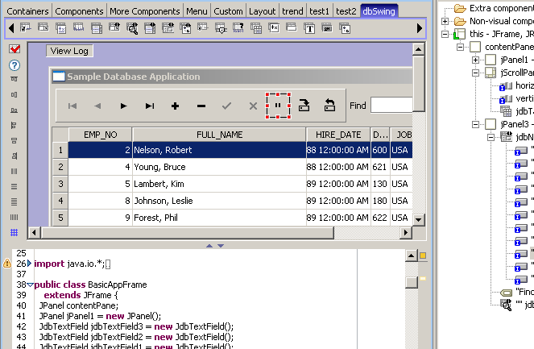
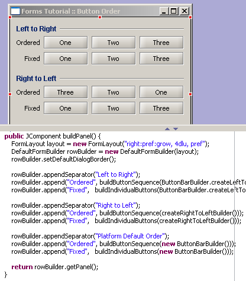

Setting tab order in SWT Composites
|
It
is now possible to set the tabList property for SWT Composites by
selecting the children of the Composite in the desired order.
First, click on the "tabList" property of the selected Composite in the
"GUI Properties" view and click on the editor button to display a popup
dialog with instructions and "Apply", "Clear" and "Cancel" buttons.
Then click on the children of the composite in the order you wish them
to be in the tab list. The little green boxes will display numbers
indicating the order. If you make a mistake, hit the "Clear" button.
When the order is correct, hit the "Apply" button and the changes will
be applied to the code.

|
Ability to invoke non-setter methods
|
In
earlier versions Jigloo would only invoke property-setter/getter
methods as it parsed the code. Now it will invoke non-setter methods if
it is allowed to by the "Non-setter methods" preference page. By
default it will not invoke non-setter methods until the class name is
added to the "Allowed" superclasses list in the preferences page (as
shown below).

As an example, the quick.dbtable.DBTable class only populates it's
table (from a database query) when it's refresh() method is called, so
in order to see the populated table in Jigloo (shown below) you must
add the DBTable class name to the "Allowed" list.

|
Bug fixed: import of beans from archive, and support for Borland beans
|
There
was a problem with the "import beans from archive" tool in Jigloo - it
would not allow classes inside an archive to be imported if they
depended on classes in a different archive. That has now been resolved,
and some other bug fixes now allow the Borland beans to be used in
Jigloo. The image below shows one of the DataExpress Borland samples
being edited in Jigloo, and a new "dbSwing" custom palette tab filled with Borland dbSwing beans.

|
Parsing enhancements
|
Arrays of objects are
now handled better by Jigloo, as well as the handling of method calls
as arguments to methods. Jigloo is now able to display more complicated
GUIs correctly, as shown by this ButtonOrderExample from the JGoodies
FormLayout/builder examples.

|
| Other bug fixes: |
- Title and icon for JFrame/JDialog and Shell displayed in Linux
- JList added to standard Swing component palette
- Custom event handlers created correctly
- Problem when adding bean to a class in the default package fixed.
- Speed improvement when adding a new class to a big project
- Bug in code placement fixed
|
Eclipse
3.2M4 supported
|
Works
with all current milestone versions of Eclipse 3.2
|
|